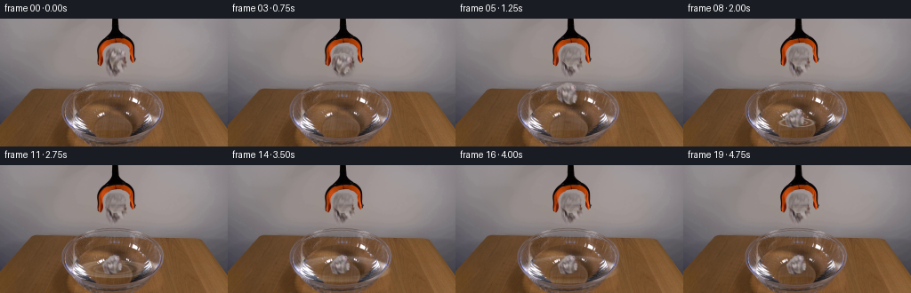
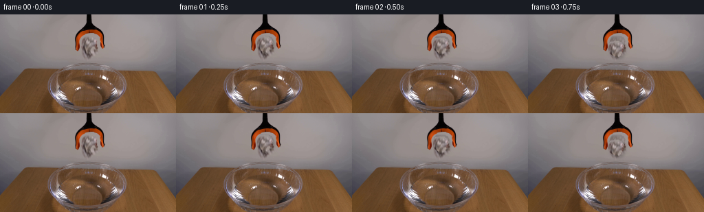
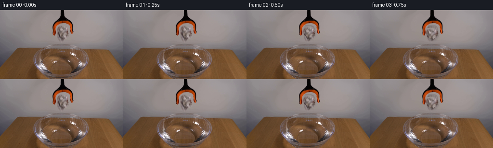
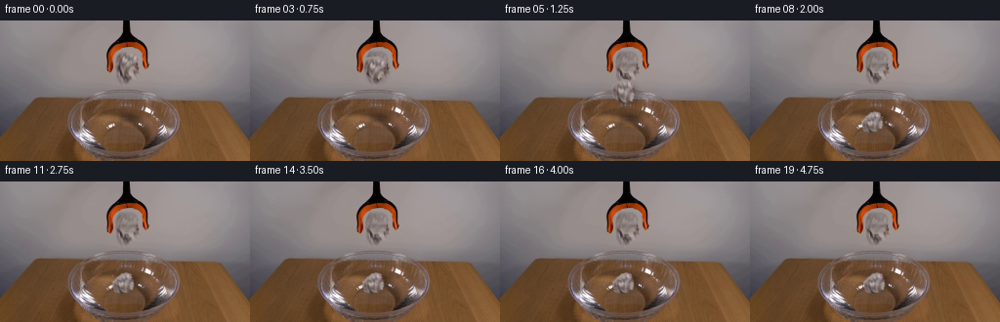
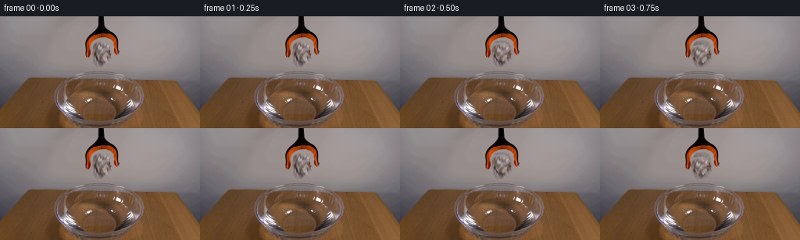
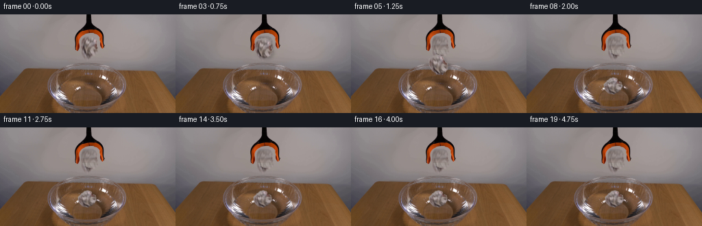

CODING AGENTS AS PIXEL WORLD MODELS
traex/DeepSeek-V4.1-Flash · 0134
点击播放 · 原生 RGB 像素
逐轮保存的候选
回放视频、检查图与代码变化。
每份候选均可单独播放。实际图片检查记录在下方工具轨迹中。
候选 01播放与检查图
点击播放 · 原生 RGB 像素


展开代码变化
--- 上一保存版本
+++ 本次保存版本
@@ -0,0 +1,277 @@
+from pathlib import Path
+
+import numpy as np
+from PIL import Image, ImageDraw, ImageFilter
+
+import artifact_io
+
+
+ROOT = Path(__file__).resolve().parent
+W, H = 256, 144
+FPS = 4
+N_FRAMES = 20
+
+
+def smoothstep(edge0, edge1, value):
+ t = np.clip((value - edge0) / (edge1 - edge0), 0.0, 1.0)
+ return t * t * (3.0 - 2.0 * t)
+
+
+def paper_mask():
+ """A soft, irregular silhouette for the crumpled sheet held by the jaws."""
+ mask = Image.new("L", (W, H), 0)
+ draw = ImageDraw.Draw(mask)
+ outline = [
+ (122, 31), (129, 30), (135, 31), (139, 34), (141, 38),
+ (140, 43), (139, 47), (136, 51), (132, 54), (127, 53),
+ (123, 50), (120, 47), (118, 42), (119, 37),
+ ]
+ draw.polygon(outline, fill=255)
+ mask = np.asarray(mask, dtype=np.float32) / 255.0
+ mask = np.asarray(
+ Image.fromarray((mask * 255).astype(np.uint8)).filter(
+ ImageFilter.GaussianBlur(0.55)
+ ),
+ dtype=np.float32,
+ ) / 255.0
+ return mask
+
+
+def build_plate(source, alpha):
+ """Remove the held sheet and reconstruct the softly lit wall behind it."""
+ plate = source.astype(np.float32).copy()
+ yy, xx = np.mgrid[0:H, 0:W]
+ fill = np.zeros_like(plate)
+
+ # The wall has a broad horizontal illumination gradient. Interpolating the
+ # clear columns on either side of the jaws preserves that gradient.
+ for y in range(27, 58):
+ left = source[y, 105:111].mean(axis=0)
+ right = source[y, 151:157].mean(axis=0)
+ t = np.clip((xx[y] - 108.0) / (154.0 - 108.0), 0.0, 1.0)
+ fill[y] = left[None, :] * (1.0 - t[:, None]) + right[None, :] * t[:, None]
+
+ # A tiny amount of measured wall texture avoids a visibly synthetic patch.
+ fine = source.astype(np.float32) - np.asarray(
+ Image.fromarray(source).filter(ImageFilter.GaussianBlur(2.0)),
+ dtype=np.float32,
+ )
+ fill += fine * 0.38
+ expand = np.clip(alpha * 1.35, 0.0, 1.0)[..., None]
+ plate = plate * (1.0 - expand) + fill * expand
+ return np.clip(plate, 0.0, 255.0)
+
+
+def build_sprite(source, alpha):
+ crop = source[28:57, 114:146].copy()
+ a = alpha[28:57, 114:146]
+ rgba = np.dstack([crop, (a * 255.0).astype(np.uint8)])
+ return Image.fromarray(rgba, mode="RGBA")
+
+
+def transformed_sprite(sprite, angle, sx, sy):
+ resized = sprite.resize(
+ (max(1, round(sprite.width * sx)), max(1, round(sprite.height * sy))),
+ Image.Resampling.BICUBIC,
+ )
+ return resized.rotate(angle, resample=Image.Resampling.BICUBIC, expand=True)
+
+
+def add_wall_shadow(frame, sprite_rgba, x, y, strength):
+ alpha = sprite_rgba.getchannel("A").filter(ImageFilter.GaussianBlur(2.2))
+ shadow = Image.new("L", (W, H), 0)
+ shadow.paste(alpha, (x + 3, y + 3))
+ shadow_array = np.asarray(shadow, dtype=np.float32) / 255.0
+ gain = 1.0 - strength * shadow_array[..., None]
+ return frame * gain
+
+
+def composite_rgba(frame, sprite_rgba, x, y):
+ layer = Image.new("RGBA", (W, H), (0, 0, 0, 0))
+ layer.alpha_composite(sprite_rgba, (x, y))
+ layer_array = np.asarray(layer, dtype=np.float32)
+ rgb = layer_array[..., :3]
+ a = layer_array[..., 3:4] / 255.0
+ return frame * (1.0 - a) + rgb * a, a[..., 0]
+
+
+def water_region():
+ yy, xx = np.mgrid[0:H, 0:W]
+ r = ((xx - 128.0) / 55.0) ** 2 + ((yy - 117.0) / 16.0) ** 2
+ return smoothstep(1.05, 0.88, r)
+
+
+def ripple_layer(frame, frame_index):
+ """Animated concentric rings on the glass-bowl water surface."""
+ yy, xx = np.mgrid[0:H, 0:W]
+ cx, cy = 127.0, 116.5
+ water = water_region()
+ light = np.zeros((H, W), dtype=np.float32)
+ shade = np.zeros((H, W), dtype=np.float32)
+
+ if frame_index >= 6:
+ age = frame_index - 6
+ for ring_index, delay in enumerate((0.0, 1.25, 2.7)):
+ local_age = age - delay
+ if local_age < 0:
+ continue
+ rx = 7.0 + 6.0 * local_age
+ ry = 1.8 + 1.5 * local_age
+ r = np.sqrt(((xx - cx) / rx) ** 2 + ((yy - cy) / ry) ** 2)
+ width = 0.11 + 0.015 * ring_index
+ ring = np.exp(-((r - 1.0) / width) ** 2)
+ decay = np.exp(-local_age / 8.5) * (0.72 ** ring_index)
+ light += ring * decay * 0.42
+ shifted = np.sqrt(
+ ((xx - cx + 0.7) / (rx + 0.4)) ** 2
+ + ((yy - cy + 0.6) / (ry + 0.3)) ** 2
+ )
+ shade += np.exp(-((shifted - 1.0) / (width * 1.2)) ** 2) * decay * 0.24
+ else:
+ # A low-amplitude, almost static glint keeps the water alive before impact.
+ phase = frame_index * 0.8
+ lines = 0.5 + 0.5 * np.sin((xx - 0.7 * yy) * 0.17 + phase)
+ light = lines * 0.045
+
+ light *= water
+ shade *= water
+ frame = frame.astype(np.float32)
+ frame += light[..., None] * np.array([150.0, 168.0, 185.0])
+ frame -= shade[..., None] * np.array([54.0, 42.0, 36.0])
+ return frame
+
+
+def add_contact_shadow(frame, frame_index):
+ if frame_index < 5:
+ return frame
+ yy, xx = np.mgrid[0:H, 0:W]
+ contact = 6.0 + (frame_index - 5) * 1.6
+ r = ((xx - 126.0) / contact) ** 2 + ((yy - 116.0) / (contact * 0.28)) ** 2
+ shadow = np.exp(-r * 1.8) * 0.12
+ frame = frame.astype(np.float32) * (1.0 - shadow[..., None])
+ return frame
+
+
+def stamp_dot(image, x, y, radius, color, opacity):
+ yy, xx = np.mgrid[0:H, 0:W]
+ d2 = (xx - x) ** 2 + (yy - y) ** 2
+ a = np.exp(-d2 / (2.0 * radius * radius)) * opacity
+ image[:] = image * (1.0 - a[..., None]) + np.asarray(color) * a[..., None]
+
+
+def add_splash(frame, frame_index):
+ if frame_index < 6 or frame_index > 10:
+ return frame
+ frame = frame.astype(np.float32).copy()
+ age = frame_index - 6
+ droplets = [
+ (-8, -2), (-5, -5), (-2, -6), (2, -7), (6, -4), (9, -1),
+ (-11, 0), (11, 1), (-4, -8), (4, -9), (0, -5),
+ ]
+ count = max(2, len(droplets) - age * 2)
+ for i, (dx, dy) in enumerate(droplets[:count]):
+ rise = 1.7 * age + 0.35 * age * age
+ spread = 1.0 + age * 0.18
+ x = 127.0 + dx * spread
+ y = 115.0 + dy * spread - rise * (0.55 + 0.07 * (i % 3))
+ radius = 0.55 if i % 3 else 0.8
+ stamp_dot(frame, x, y, radius, (205, 212, 218), 0.72 - 0.1 * age)
+ return frame
+
+
+def paper_pose(frame_index):
+ if frame_index <= 1:
+ return 129.0, 43.5, 0.0, 1.0, 1.0
+
+ release_x = 129.0
+ release_y = 44.0
+ positions = {
+ 2: (128.8, 45.0, 2.0),
+ 3: (128.2, 50.5, 7.5),
+ 4: (127.2, 63.0, 17.0),
+ 5: (126.2, 84.5, 28.0),
+ 6: (125.8, 106.5, 38.0),
+ 7: (126.0, 111.5, 43.0),
+ 8: (126.4, 113.0, 45.0),
+ 9: (126.7, 112.5, 46.0),
+ 10: (126.8, 113.2, 46.5),
+ 11: (127.0, 112.8, 46.0),
+ 12: (127.1, 113.3, 46.5),
+ 13: (127.2, 113.0, 46.0),
+ 14: (127.3, 113.4, 46.5),
+ 15: (127.3, 113.1, 46.0),
+ 16: (127.4, 113.3, 46.2),
+ 17: (127.4, 113.1, 46.0),
+ 18: (127.5, 113.2, 46.1),
+ 19: (127.5, 113.1, 46.0),
+ }
+ x, y, angle = positions[frame_index]
+ if frame_index <= 5:
+ sy = 1.0 + 0.008 * (frame_index - 2)
+ else:
+ sy = 0.82
+ return x, y, angle, 1.0, sy
+
+
+def tint_wet_paper(rgba):
+ arr = np.asarray(rgba, dtype=np.float32).copy()
+ h = arr.shape[0]
+ vertical = np.linspace(0.0, 1.0, h, dtype=np.float32)[:, None, None]
+ wet = np.clip((vertical - 0.48) / 0.52, 0.0, 1.0)
+ target = np.array([117.0, 113.0, 116.0])
+ arr[..., :3] = arr[..., :3] * (1.0 - 0.22 * wet) + target * (0.22 * wet)
+ arr[..., 3] *= 1.0 - 0.10 * wet[..., 0]
+ return Image.fromarray(np.clip(arr, 0.0, 255.0).astype(np.uint8), mode="RGBA")
+
+
+def main():
+ source = np.asarray(Image.open(ROOT / "first_frame.png").convert("RGB"))
+ assert source.shape == (H, W, 3)
+
+ alpha = paper_mask()
+ plate = build_plate(source, alpha)
+ sprite = build_sprite(source, alpha)
+ water = water_region()
+ frames = []
+
+ for i in range(N_FRAMES):
+ if i == 0:
+ frames.append(source.copy())
+ continue
+
+ frame = plate.copy()
+ frame = ripple_layer(frame, i)
+ frame = add_contact_shadow(frame, i)
+
+ x, y, angle, sx, sy = paper_pose(i)
+ sprite_i = transformed_sprite(sprite, angle, sx, sy)
+ if i >= 7:
+ sprite_i = tint_wet_paper(sprite_i)
+
+ paste_x = int(round(x - sprite_i.width / 2.0))
+ paste_y = int(round(y - sprite_i.height / 2.0))
+
+ shadow_strength = 0.18 if i <= 5 else 0.08
+ frame = add_wall_shadow(frame, sprite_i, paste_x, paste_y, shadow_strength)
+ frame, paper_alpha = composite_rgba(frame, sprite_i, paste_x, paste_y)
+
+ # Water is opaque enough to occlude the lowest part of the floating sheet.
+ if i >= 7:
+ yy, xx = np.mgrid[0:H, 0:W]
+ submerged = smoothstep(118.0, 124.0, yy) * water * paper_alpha
+ frame = frame * (1.0 - 0.20 * submerged[..., None]) + np.array(
+ [78.0, 73.0, 72.0]
+ ) * (0.20 * submerged[..., None])
+
+ frame = add_splash(frame, i)
+ frames.append(np.clip(frame, 0.0, 255.0).astype(np.uint8))
+
+ frames = np.stack(frames, axis=0)
+ assert frames.shape == (N_FRAMES, H, W, 3)
+ assert frames.dtype == np.uint8
+ assert np.array_equal(frames[0], source)
+ artifact_io.save(frames, ROOT)
+
+
+if __name__ == "__main__":
+ main()
候选 02播放与检查图
点击播放 · 原生 RGB 像素

展开代码变化
--- 上一保存版本
+++ 本次保存版本
@@ -57,7 +57,7 @@
dtype=np.float32,
)
fill += fine * 0.38
- expand = np.clip(alpha * 1.35, 0.0, 1.0)[..., None]
+ expand = np.clip(alpha * 1.08, 0.0, 1.0)[..., None]
plate = plate * (1.0 - expand) + fill * expand
return np.clip(plate, 0.0, 255.0)
@@ -97,48 +97,55 @@
def water_region():
yy, xx = np.mgrid[0:H, 0:W]
- r = ((xx - 128.0) / 55.0) ** 2 + ((yy - 117.0) / 16.0) ** 2
- return smoothstep(1.05, 0.88, r)
+ r = ((xx - 128.0) / 47.0) ** 2 + ((yy - 107.0) / 22.0) ** 2
+ return smoothstep(1.0, 0.78, r)
def ripple_layer(frame, frame_index):
"""Animated concentric rings on the glass-bowl water surface."""
yy, xx = np.mgrid[0:H, 0:W]
- cx, cy = 127.0, 116.5
+ cx, cy = 127.0, 106.0
water = water_region()
- light = np.zeros((H, W), dtype=np.float32)
- shade = np.zeros((H, W), dtype=np.float32)
+ dx = np.zeros((H, W), dtype=np.float32)
+ dy = np.zeros((H, W), dtype=np.float32)
if frame_index >= 6:
age = frame_index - 6
- for ring_index, delay in enumerate((0.0, 1.25, 2.7)):
+ for ring_index, delay in enumerate((0.0, 1.6, 3.4)):
local_age = age - delay
if local_age < 0:
continue
- rx = 7.0 + 6.0 * local_age
- ry = 1.8 + 1.5 * local_age
- r = np.sqrt(((xx - cx) / rx) ** 2 + ((yy - cy) / ry) ** 2)
- width = 0.11 + 0.015 * ring_index
- ring = np.exp(-((r - 1.0) / width) ** 2)
- decay = np.exp(-local_age / 8.5) * (0.72 ** ring_index)
- light += ring * decay * 0.42
- shifted = np.sqrt(
- ((xx - cx + 0.7) / (rx + 0.4)) ** 2
- + ((yy - cy + 0.6) / (ry + 0.3)) ** 2
+ radius = np.sqrt((xx - cx) ** 2 + ((yy - cy) * 2.2) ** 2)
+ front = 4.0 + 5.4 * local_age
+ envelope = np.exp(-((radius - front) / (4.0 + 0.8 * local_age)) ** 2)
+ wave = np.sin((radius - front) * 1.18) * envelope
+ decay = np.exp(-local_age / 8.0) * (0.66 ** ring_index)
+ angular = 0.74 + 0.26 * np.sin(
+ np.arctan2(yy - cy, xx - cx) * (3.0 + ring_index) + 0.7
)
- shade += np.exp(-((shifted - 1.0) / (width * 1.2)) ** 2) * decay * 0.24
+ dx += wave * angular * decay * 1.25
+ dy += wave * angular * decay * 0.24
else:
- # A low-amplitude, almost static glint keeps the water alive before impact.
- phase = frame_index * 0.8
- lines = 0.5 + 0.5 * np.sin((xx - 0.7 * yy) * 0.17 + phase)
- light = lines * 0.045
-
- light *= water
- shade *= water
- frame = frame.astype(np.float32)
- frame += light[..., None] * np.array([150.0, 168.0, 185.0])
- frame -= shade[..., None] * np.array([54.0, 42.0, 36.0])
- return frame
+ phase = frame_index * 0.55
+ dx = 0.12 * np.sin(yy * 0.31 + phase)
+ dy = 0.05 * np.sin(xx * 0.17 - phase)
+
+ dx *= water
+ dy *= water
+ sample_x = np.clip(xx + dx, 0.0, W - 1.001)
+ sample_y = np.clip(yy + dy, 0.0, H - 1.001)
+ x0 = np.floor(sample_x).astype(np.int32)
+ y0 = np.floor(sample_y).astype(np.int32)
+ fx = (sample_x - x0)[..., None]
+ fy = (sample_y - y0)[..., None]
+ x1 = np.minimum(x0 + 1, W - 1)
+ y1 = np.minimum(y0 + 1, H - 1)
+
+ f = frame.astype(np.float32)
+ top = f[y0, x0] * (1.0 - fx) + f[y0, x1] * fx
+ bottom = f[y1, x0] * (1.0 - fx) + f[y1, x1] * fx
+ refracted = top * (1.0 - fy) + bottom * fy
+ return f * (1.0 - water[..., None] * 0.82) + refracted * (water[..., None] * 0.82)
def add_contact_shadow(frame, frame_index):
@@ -146,7 +153,7 @@
return frame
yy, xx = np.mgrid[0:H, 0:W]
contact = 6.0 + (frame_index - 5) * 1.6
- r = ((xx - 126.0) / contact) ** 2 + ((yy - 116.0) / (contact * 0.28)) ** 2
+ r = ((xx - 126.5) / contact) ** 2 + ((yy - 105.5) / (contact * 0.30)) ** 2
shadow = np.exp(-r * 1.8) * 0.12
frame = frame.astype(np.float32) * (1.0 - shadow[..., None])
return frame
@@ -160,22 +167,22 @@
def add_splash(frame, frame_index):
- if frame_index < 6 or frame_index > 10:
+ if frame_index < 6 or frame_index > 11:
return frame
frame = frame.astype(np.float32).copy()
age = frame_index - 6
droplets = [
- (-8, -2), (-5, -5), (-2, -6), (2, -7), (6, -4), (9, -1),
- (-11, 0), (11, 1), (-4, -8), (4, -9), (0, -5),
+ (-7, -2), (-4, -5), (-1, -6), (3, -6), (7, -4),
+ (-10, 0), (10, 0), (-3, -8), (4, -8),
]
count = max(2, len(droplets) - age * 2)
for i, (dx, dy) in enumerate(droplets[:count]):
- rise = 1.7 * age + 0.35 * age * age
+ rise = 1.4 * age + 0.20 * age * age
spread = 1.0 + age * 0.18
x = 127.0 + dx * spread
- y = 115.0 + dy * spread - rise * (0.55 + 0.07 * (i % 3))
- radius = 0.55 if i % 3 else 0.8
- stamp_dot(frame, x, y, radius, (205, 212, 218), 0.72 - 0.1 * age)
+ y = 104.5 + dy * spread - rise * (0.55 + 0.07 * (i % 3))
+ radius = 0.48 if i % 3 else 0.68
+ stamp_dot(frame, x, y, radius, (194, 202, 208), 0.60 - 0.08 * age)
return frame
@@ -184,26 +191,25 @@
return 129.0, 43.5, 0.0, 1.0, 1.0
release_x = 129.0
- release_y = 44.0
positions = {
2: (128.8, 45.0, 2.0),
- 3: (128.2, 50.5, 7.5),
- 4: (127.2, 63.0, 17.0),
- 5: (126.2, 84.5, 28.0),
- 6: (125.8, 106.5, 38.0),
- 7: (126.0, 111.5, 43.0),
- 8: (126.4, 113.0, 45.0),
- 9: (126.7, 112.5, 46.0),
- 10: (126.8, 113.2, 46.5),
- 11: (127.0, 112.8, 46.0),
- 12: (127.1, 113.3, 46.5),
- 13: (127.2, 113.0, 46.0),
- 14: (127.3, 113.4, 46.5),
- 15: (127.3, 113.1, 46.0),
- 16: (127.4, 113.3, 46.2),
- 17: (127.4, 113.1, 46.0),
- 18: (127.5, 113.2, 46.1),
- 19: (127.5, 113.1, 46.0),
+ 3: (128.3, 49.0, 7.0),
+ 4: (127.6, 57.0, 16.0),
+ 5: (126.7, 73.0, 28.0),
+ 6: (126.1, 92.0, 37.0),
+ 7: (126.0, 103.2, 42.0),
+ 8: (126.3, 105.0, 43.0),
+ 9: (126.6, 104.5, 42.0),
+ 10: (126.8, 105.0, 42.5),
+ 11: (127.0, 104.7, 42.0),
+ 12: (127.1, 105.1, 42.4),
+ 13: (127.2, 104.9, 42.1),
+ 14: (127.3, 105.1, 42.3),
+ 15: (127.3, 104.9, 42.1),
+ 16: (127.4, 105.1, 42.2),
+ 17: (127.4, 105.0, 42.1),
+ 18: (127.5, 105.1, 42.2),
+ 19: (127.5, 105.0, 42.1),
}
x, y, angle = positions[frame_index]
if frame_index <= 5:
@@ -220,7 +226,7 @@
wet = np.clip((vertical - 0.48) / 0.52, 0.0, 1.0)
target = np.array([117.0, 113.0, 116.0])
arr[..., :3] = arr[..., :3] * (1.0 - 0.22 * wet) + target * (0.22 * wet)
- arr[..., 3] *= 1.0 - 0.10 * wet[..., 0]
+ arr[..., 3] *= 1.0 - 0.07 * wet[..., 0]
return Image.fromarray(np.clip(arr, 0.0, 255.0).astype(np.uint8), mode="RGBA")
@@ -235,7 +241,7 @@
frames = []
for i in range(N_FRAMES):
- if i == 0:
+ if i <= 1:
frames.append(source.copy())
continue
@@ -258,10 +264,10 @@
# Water is opaque enough to occlude the lowest part of the floating sheet.
if i >= 7:
yy, xx = np.mgrid[0:H, 0:W]
- submerged = smoothstep(118.0, 124.0, yy) * water * paper_alpha
- frame = frame * (1.0 - 0.20 * submerged[..., None]) + np.array(
+ submerged = smoothstep(109.0, 117.0, yy) * water * paper_alpha
+ frame = frame * (1.0 - 0.18 * submerged[..., None]) + np.array(
[78.0, 73.0, 72.0]
- ) * (0.20 * submerged[..., None])
+ ) * (0.18 * submerged[..., None])
frame = add_splash(frame, i)
frames.append(np.clip(frame, 0.0, 255.0).astype(np.uint8))
候选 03播放与检查图
点击播放 · 原生 RGB 像素


展开代码变化
--- 上一保存版本
+++ 本次保存版本
@@ -66,7 +66,7 @@
crop = source[28:57, 114:146].copy()
a = alpha[28:57, 114:146]
rgba = np.dstack([crop, (a * 255.0).astype(np.uint8)])
- return Image.fromarray(rgba, mode="RGBA")
+ return Image.fromarray(rgba)
def transformed_sprite(sprite, angle, sx, sy):
@@ -125,11 +125,6 @@
)
dx += wave * angular * decay * 1.25
dy += wave * angular * decay * 0.24
- else:
- phase = frame_index * 0.55
- dx = 0.12 * np.sin(yy * 0.31 + phase)
- dy = 0.05 * np.sin(xx * 0.17 - phase)
-
dx *= water
dy *= water
sample_x = np.clip(xx + dx, 0.0, W - 1.001)
@@ -167,10 +162,10 @@
def add_splash(frame, frame_index):
- if frame_index < 6 or frame_index > 11:
+ if frame_index < 7 or frame_index > 11:
return frame
frame = frame.astype(np.float32).copy()
- age = frame_index - 6
+ age = frame_index - 7
droplets = [
(-7, -2), (-4, -5), (-1, -6), (3, -6), (7, -4),
(-10, 0), (10, 0), (-3, -8), (4, -8),
@@ -199,17 +194,17 @@
6: (126.1, 92.0, 37.0),
7: (126.0, 103.2, 42.0),
8: (126.3, 105.0, 43.0),
- 9: (126.6, 104.5, 42.0),
- 10: (126.8, 105.0, 42.5),
- 11: (127.0, 104.7, 42.0),
- 12: (127.1, 105.1, 42.4),
- 13: (127.2, 104.9, 42.1),
- 14: (127.3, 105.1, 42.3),
- 15: (127.3, 104.9, 42.1),
- 16: (127.4, 105.1, 42.2),
- 17: (127.4, 105.0, 42.1),
- 18: (127.5, 105.1, 42.2),
- 19: (127.5, 105.0, 42.1),
+ 9: (126.6, 105.0, 42.0),
+ 10: (126.8, 105.0, 42.0),
+ 11: (127.0, 105.0, 42.0),
+ 12: (127.1, 105.0, 42.0),
+ 13: (127.2, 105.0, 42.0),
+ 14: (127.3, 105.0, 42.0),
+ 15: (127.3, 105.0, 42.0),
+ 16: (127.4, 105.0, 42.0),
+ 17: (127.4, 105.0, 42.0),
+ 18: (127.5, 105.0, 42.0),
+ 19: (127.5, 105.0, 42.0),
}
x, y, angle = positions[frame_index]
if frame_index <= 5:
@@ -227,7 +222,7 @@
target = np.array([117.0, 113.0, 116.0])
arr[..., :3] = arr[..., :3] * (1.0 - 0.22 * wet) + target * (0.22 * wet)
arr[..., 3] *= 1.0 - 0.07 * wet[..., 0]
- return Image.fromarray(np.clip(arr, 0.0, 255.0).astype(np.uint8), mode="RGBA")
+ return Image.fromarray(np.clip(arr, 0.0, 255.0).astype(np.uint8))
def main():
@@ -246,7 +241,8 @@
continue
frame = plate.copy()
- frame = ripple_layer(frame, i)
+ if i >= 7:
+ frame = ripple_layer(frame, i)
frame = add_contact_shadow(frame, i)
x, y, angle, sx, sy = paper_pose(i)
候选 04播放与检查图
点击播放 · 原生 RGB 像素

展开代码变化
--- 上一保存版本
+++ 本次保存版本
@@ -22,9 +22,10 @@
mask = Image.new("L", (W, H), 0)
draw = ImageDraw.Draw(mask)
outline = [
- (122, 31), (129, 30), (135, 31), (139, 34), (141, 38),
- (140, 43), (139, 47), (136, 51), (132, 54), (127, 53),
- (123, 50), (120, 47), (118, 42), (119, 37),
+ (122, 31), (129, 30), (135, 31), (139, 34), (141, 39),
+ (140, 44), (142, 48), (141, 53), (138, 57), (133, 59),
+ (128, 58), (123, 56), (120, 52), (118, 47), (118, 41),
+ (119, 36),
]
draw.polygon(outline, fill=255)
mask = np.asarray(mask, dtype=np.float32) / 255.0
@@ -45,7 +46,7 @@
# The wall has a broad horizontal illumination gradient. Interpolating the
# clear columns on either side of the jaws preserves that gradient.
- for y in range(27, 58):
+ for y in range(27, 62):
left = source[y, 105:111].mean(axis=0)
right = source[y, 151:157].mean(axis=0)
t = np.clip((xx[y] - 108.0) / (154.0 - 108.0), 0.0, 1.0)
@@ -63,8 +64,8 @@
def build_sprite(source, alpha):
- crop = source[28:57, 114:146].copy()
- a = alpha[28:57, 114:146]
+ crop = source[28:62, 114:146].copy()
+ a = alpha[28:62, 114:146]
rgba = np.dstack([crop, (a * 255.0).astype(np.uint8)])
return Image.fromarray(rgba)
候选 05播放与检查图
点击播放 · 原生 RGB 像素
展开代码变化
--- 上一保存版本
+++ 本次保存版本
@@ -110,8 +110,8 @@
dx = np.zeros((H, W), dtype=np.float32)
dy = np.zeros((H, W), dtype=np.float32)
- if frame_index >= 6:
- age = frame_index - 6
+ if frame_index >= 7:
+ age = frame_index - 7
for ring_index, delay in enumerate((0.0, 1.6, 3.4)):
local_age = age - delay
if local_age < 0:
@@ -145,7 +145,7 @@
def add_contact_shadow(frame, frame_index):
- if frame_index < 5:
+ if frame_index < 7:
return frame
yy, xx = np.mgrid[0:H, 0:W]
contact = 6.0 + (frame_index - 5) * 1.6
@@ -186,7 +186,6 @@
if frame_index <= 1:
return 129.0, 43.5, 0.0, 1.0, 1.0
- release_x = 129.0
positions = {
2: (128.8, 45.0, 2.0),
3: (128.3, 49.0, 7.0),
可观测工具轨迹
实际执行的命令与返回图片。
命令 1exit 0
/bin/bash -c "pwd && rg --files -g '"'!**/.git/**'"' | sed -n '1,120p'"
命令 2exit 0
/bin/bash -c "sed -n '1,240p' prompt.txt"
命令 3exit 0
/bin/bash -c "sed -n '1,260p' GENERATION_RULES.md"
命令 4exit 0
/bin/bash -c "find . -maxdepth 2 -type f -printf '%p %s bytes\\n' | sort"
命令 5exit 0
/bin/bash -c "sed -n '1,260p' artifact_io.py"
命令 6exit 0
/bin/bash -c "sed -n '1,260p' player_template.html"
命令 7exit 0
/bin/bash -c "python - <<'PY'
from PIL import Image
import numpy as np
im=Image.open('first_frame.png').convert('RGB')
a=np.asarray(im)
print(im.size, a.dtype, a.min(), a.max(), a.mean(axis=(0,1)))
print('unique',len(np.unique(a.reshape(-1,3),axis=0)))
for y in range(0,144,12):
print(y, [tuple(np.median(a[y:y+12,x:x+16],axis=(0,1)).astype(int)) for x in range(0,256,32)])
PY"命令 8exit 0
/bin/bash -c "python - <<'PY'
from PIL import Image
import numpy as np
from collections import Counter
im=np.asarray(Image.open('first_frame.png').convert('RGB'))
# quantized palette
q=(im//16)*16
c=Counter(map(tuple,q.reshape(-1,3)))
for rgb,n in c.most_common(30): print(rgb,n)
PY"命令 9exit 0
/bin/bash -c "python - <<'PY'
from PIL import Image
import numpy as np
a=np.asarray(Image.open('first_frame.png').convert('RGB')).astype(int)
R,G,B=a.transpose(2,0,1)
ms={
'orange':(R>80)&(R>1.3*G)&(G>1.15*B)&(R-B>35),
'dark':(R<55)&(G<55)&(B<55),
'brown':(R>65)&(R>1.25*G)&(G>1.15*B)&(R-B>20)&(R<170),
'bluegray':(B>G*1.02)&(G>R*0.95)&(R<150),
'water':(B>R+5)&(G>R+3)&(B<160)&(R>30),
'graywall':(abs(R-G)<18)&(abs(G-B)<22)&(R>90),
}
for n,m in ms.items():
ys,xs=np.where(m)
print(n,len(xs), (xs.min(),ys.min(),xs.max(),ys.max()) if len(xs) else None)
# orange count by rows/cols
m=ms['orange']
for y in range(0,144,4):
xs=np.where(m[y:y+4].any(0))[0]
if len(xs): print('y',y,'x',xs.min(),xs.max(),'n',m[y:y+4].sum())
PY"命令 10exit 0
/bin/bash -c "python - <<'PY'
from PIL import Image
import numpy as np
from sklearn.cluster import KMeans
im=np.asarray(Image.open('first_frame.png').convert('RGB'))
a=im.reshape(-1,3).astype(float)
km=KMeans(n_clusters=10, random_state=2, n_init=10).fit(a[::3])
c=km.cluster_centers_.round().astype(int)
print('centers')
for i,v in enumerate(c): print(i,tuple(v), (km.labels_[::3]==i).sum())
lab=km.predict(a).reshape(144,256)
# names by centers
for y in range(0,144,4):
s=''
for x in range(0,256,4):
ids,ct=np.unique(lab[y:y+4,x:x+4],return_counts=True)
s += '0123456789'[ids[ct.argmax()]]
print(f'{y:03d} {s}')
PY"命令 11exit 0
/bin/bash -c "python - <<'PY'
from PIL import Image
import numpy as np
from sklearn.cluster import KMeans
im=np.asarray(Image.open('first_frame.png').convert('RGB'))
a=im.reshape(-1,3).astype(float)
km=KMeans(n_clusters=12, random_state=4, n_init=10).fit(a[::2])
lab=km.predict(a).reshape(144,256)
c=km.cluster_centers_.round().astype(int)
for i,v in enumerate(c):
m=lab==i; ys,xs=np.where(m)
print(i,tuple(v),'n',m.sum(),'bbox',(xs.min(),ys.min(),xs.max(),ys.max()),'med',tuple(np.median(im[m],axis=0).astype(int)))
PY"命令 12exit 0
/bin/bash -c "python - <<'PY'
from PIL import Image
import numpy as np
a=np.asarray(Image.open('first_frame.png').convert('RGB')).astype(int)
R,G,B=a.transpose(2,0,1)
# categories
cat=np.full((144,256),'.',dtype='<U1')
cat[(R>80)&(R>1.55*G)&(G>1.2*B)]='O'
cat[(R<45)&(G<45)&(B<45)]='K'
cat[(R>195)&(G>195)&(B>195)]='W'
cat[(R>120)&(abs(R-G)<12)&(abs(G-B)<12)]='g'
cat[(R<115)&(R>G+5)&(G>B+5)&(B<75)]='b'
cat[(R>85)&(R<150)&(G>65)&(G<130)&(B<90)&(R>G+12)&(G>B+10)]='w'
# print 2x2 most common non dot
for y in range(0,144,2):
s=''
for x in range(0,256,2):
vals=cat[y:y+2,x:x+2].ravel()
non=vals[vals"'!='"'.']
if len(non)==0: ch='.'
else:
u,c=np.unique(non,return_counts=True); ch=u[c.argmax()]
s+=ch
print(s)
PY"命令 13exit 0
/bin/bash -c "python - <<'PY'
from PIL import Image
import numpy as np
a=np.asarray(Image.open('first_frame.png').convert('RGB')).astype(int)
R,G,B=a.transpose(2,0,1)
# chars: wall ., black K, orange O, white P, midgray g, brown b, darkgray d
for y in range(0,80):
s=''
for x in range(90,171):
r,g,b=a[y,x]
if r<45 and g<45 and b<45: c='K'
elif r>90 and r>1.55*g and g>1.15*b: c='O'
elif r>185 and g>185 and b>185: c='P'
elif abs(r-g)<14 and abs(g-b)<16 and r>115: c='.'
elif abs(r-g)<16 and abs(g-b)<18 and r<85: c='k'
elif r>g+12 and g>b+10: c='b'
else: c=':'
s+=c
print(f'{y:03d} {s}')
PY"命令 14exit 0
/bin/bash -c "python - <<'PY'
from PIL import Image
import numpy as np
a=np.asarray(Image.open('first_frame.png').convert('RGB'))
# approximate geometric masks using color brightness
R,G,B=a.transpose(2,0,1).astype(int)
# print key pixels grid color values every 4 in object
for y in range(20,56,2):
print('y',y)
for x in range(108,154,4):
print(x, tuple(a[y,x]), end='; ')
print()
PY"命令 15exit 0
/bin/bash -c "python - <<'PY'
from PIL import Image
import numpy as np
from scipy.ndimage import sobel, gaussian_filter
im=np.asarray(Image.open('first_frame.png').convert('RGB')).astype(float)
g=gaussian_filter(im.mean(2),1)
e=np.hypot(sobel(g,0),sobel(g,1))
# crop central lower region, downsample 2x2 max
for y in range(70,144,2):
s=''
for x in range(0,256,2):
v=e[y:y+2,x:x+2].max()
s += ' .:-=+*#%@'[min(9,int(v/18))]
print(f'{y:03d} {s}')
PY"命令 16exit 0
/bin/bash -c "python - <<'PY'
from PIL import Image
import numpy as np
im=np.asarray(Image.open('first_frame.png').convert('RGB'))
# save nearest enlarged crop for own pixel inspection via numeric/ascii only (not visual tool)
Image.fromarray(im[70:144,0:256]).resize((1024,296),Image.Resampling.NEAREST).save('.tmp/crop_bowl.png')
# Pixel coords and RGB along central line
for y in [78,80,82,84,90,100,110,120,130,140]:
print('row',y)
for x in range(50,210,10): print(x,tuple(im[y,x]),end=' ')
print()
PY"命令 17exit 0
/bin/bash -c "python - <<'PY'
from PIL import Image
import numpy as np
a=np.asarray(Image.open('first_frame.png').convert('RGB')).astype(int)
# inspect local dark/blue etc via row run summaries around bowl
R,G,B=a.transpose(2,0,1)
for y in range(78,144,4):
# run-length quantized label by luminance and chroma
vals=[]
for x in range(0,256):
r,g,b=a[y,x]
if max(r,g,b)<55: c='K'
elif r>200 and g>200 and b>200: c='W'
elif r>150 and g>140 and b>135: c='L'
elif b>r+10 and b>g+4: c='B'
elif r>g+25 and g>b+18: c='T'
else: c='.'
vals.append(c)
s=''.join(vals)
# compress runs 3+
out=[];i=0
while i<256:
j=i+1
while j<256 and s[j]==s[i]:j+=1
if j-i>=4: out.append(f'{i}-{j-1}{s[i]}')
i=j
print(y,' '.join(out))
PY"命令 18exit 0
/bin/bash -c "python - <<'PY' mods=['cv2','scipy','skimage','numpy','PIL'] for m in mods: try: mod=__import__(m); print(m, getattr(mod,'__version__','ok')) except Exception as e: print(m,'NO',e) PY"
命令 19exit 0
/bin/bash -c "fc-list | sed -n '1,10p'"
命令 20exit 0
/bin/bash -c "python - <<'PY'
from PIL import Image
import numpy as np
a=np.asarray(Image.open('first_frame.png').convert('RGB')).astype(int)
# label detailed colors in bowl crop at 2x2 majority with nearest palette characterization
for y in range(76,144,2):
s=''
for x in range(64,192,2):
p=a[y:y+2,x:x+2].mean((0,1))
r,g,b=p
if r>195 and g>190 and b>190:c='W'
elif max(p)<45:c='K'
elif b>r+20 and b>g+10:c='B'
elif r>150 and g>135 and b>130:c='L'
elif r>g+35 and g>b+22:c='T'
elif r>g+12 and g>b+12:c='t'
elif r>120 and abs(r-g)<18 and abs(g-b)<20:c='g'
else:c='.'
s+=c
print(f'{y:03d} {s}')
PY"命令 21exit 0
/bin/bash -c "python - <<'PY'
from PIL import Image
import numpy as np
a=np.asarray(Image.open('first_frame.png').convert('RGB')).astype(int)
# Dump non-background pixels around center object based on exact wall texture model? We know wall at x,y generally.
# print chroma and luminance values around paper shape rows
for y in range(26,58,2):
runs=[]
# dark/orange boundaries
for x in range(105,158):
r,g,b=a[y,x]
if max(r,g,b)<55: c='K'
elif r>110 and r>1.6*g and g>1.1*b: c='O'
elif r>g+15 and g>b+10:c='o'
elif r>95 and r<190 and abs(r-g)<18 and abs(g-b)<20:c='g'
else:c='.'
runs.append(c)
print(y,''.join(runs))
PY"命令 22exit 0
/bin/bash -c "python - <<'PY'
from PIL import Image
import numpy as np
from scipy.ndimage import gaussian_filter
im=np.asarray(Image.open('first_frame.png').convert('RGB')).astype(float)
g=gaussian_filter(im.mean(2),0.8)
gy=np.abs(np.diff(g,axis=0)); gx=np.abs(np.diff(g,axis=1))
for y in range(72,144,2):
vals=[]
for x in range(1,255):
e=max(gy[min(y,142),x],gx[y,x-1])
if e>15: vals.append((x,e))
# local strongest unique 12
vals=sorted(vals,key=lambda p:p[1],reverse=True)[:8]
print(f'{y:03d}', ' '.join(f'{x}:{e:.0f}' for x,e in sorted(vals)))
PY"命令 23exit 0
/bin/bash -c "python - <<'PY'
from PIL import Image
import numpy as np
a=np.asarray(Image.open('first_frame.png').convert('RGB')).astype(int)
# K/O/B etc detailed only center
for y in range(80,144):
runs=[]; i=70
s=''
for x in range(70,190):
r,g,b=a[y,x]
if max(r,g,b)<55:c='K'
elif r>195 and g>195 and b>195:c='W'
elif b>r+18 and b>g+8:c='B'
elif r>g+25 and g>b+18:c='T'
elif r>g+12 and g>b+10:c='t'
elif r>125 and abs(r-g)<15 and abs(g-b)<17:c='g'
else:c='.'
s+=c
if any(ch in s for ch in 'KWB'):
print(f'{y:03d} {s}')
PY"命令 24exit 0
/bin/bash -c "python - <<'PY'
from PIL import Image
import numpy as np
a=np.asarray(Image.open('first_frame.png').convert('RGB')).astype(int)
# exact map colored dark white, crop x=75..190 every pixel, y=84..144
for y in range(84,144):
s=''
for x in range(75,190):
r,g,b=a[y,x]
if max(r,g,b)<42:c='K'
elif b>r+20 and b>g+8:c='B'
elif r>205 and g>205 and b>205:c='W'
elif r>160 and g>150 and b>145:c='L'
elif r>g+28 and g>b+20:c='T'
elif r>g+13 and g>b+12:c='t'
elif r>120 and abs(r-g)<15 and abs(g-b)<18:c='g'
else:c='.'
s+=c
print(f'{y:03d} {s}')
PY"命令 25exit 0
/bin/bash -c "python - <<'PY'
from PIL import Image
import numpy as np
im=np.asarray(Image.open('first_frame.png').convert('RGB')).astype(float)
# 2x2 cells => 128x72. luminance + warm chroma categories
for y in range(0,144,2):
s=''
for x in range(0,256,2):
p=im[y:y+2,x:x+2].mean((0,1)); r,g,b=p
if r>210 and g>205 and b>205: c='W'
elif max(p)<35: c='K'
elif max(p)<70: c='k'
elif b>r+12 and b>g+5: c='B'
elif r>g+45 and g>b+20: c='O'
elif r>g+22 and g>b+14: c='T'
elif r>g+10 and g>b+7: c='t'
elif r>150: c='L'
elif r>120: c='g'
elif r>90: c='d'
else: c='.'
s+=c
print(f'{y:03d} {s}')
PY"命令 26exit 1
/bin/bash -c 'python generate.py'
命令 27exit 1
/bin/bash -c 'python generate.py'
命令 28exit 0
/bin/bash -c 'python generate.py'
命令 29exit 0
/bin/bash -c "python - <<'PY'
from PIL import Image
import numpy as np
src=np.asarray(Image.open('first_frame.png').convert('RGB')).astype(int)
fr=np.stack([np.asarray(Image.open(f'frames/{i:02d}.png').convert('RGB')).astype(int) for i in range(20)])
for i in range(20):
d=np.abs(fr[i]-src)
changed=np.max(d,axis=2)>2
ys,xs=np.where(changed)
print(i, 'diff>2',changed.sum(), 'mean',d.mean().round(3),'max',d.max(), 'bbox', (xs.min(),ys.min(),xs.max(),ys.max()) if len(xs) else None)
print('successive mean abs')
for i in range(1,20):
d=np.abs(fr[i]-fr[i-1]); ch=np.max(d,2)>1
print(i, round(d.mean(),3), int(ch.sum()))
PY"命令 30exit 0
/bin/bash -c "python - <<'PY'
from PIL import Image
import numpy as np
src=np.asarray(Image.open('first_frame.png').convert('RGB')).astype(int)
for i in [1,3,5,7,10,15,19]:
a=np.asarray(Image.open(f'frames/{i:02d}.png').convert('RGB')).astype(int)
d=np.max(np.abs(a-src),axis=2)
# row/col bounds of big changes >10
ys,xs=np.where(d>10)
print('\\nframe',i,'bbox', (xs.min(),ys.min(),xs.max(),ys.max()),'n',len(xs))
# categorize unchanged by region
for name,(x0,y0,x1,y1) in {'topwall':(0,0,256,75),'bowl':(65,80,190,143),'tableL':(0,82,70,144),'tableR':(190,82,256,144)}.items():
dd=d[y0:y1,x0:x1]
print(name,'mean',round(dd.mean(),2),'n>10',int((dd>10).sum()))
PY"命令 31exit 0
/bin/bash -c "python - <<'PY'
from PIL import Image
import numpy as np
src=np.asarray(Image.open('first_frame.png').convert('RGB')).astype(int)
a=np.asarray(Image.open('frames/05.png').convert('RGB')).astype(int)
d=np.max(np.abs(a-src),axis=2)
# ascii 2x2 cells for affected 100-155 x, 25-122
for y in range(24,124,2):
s=''
for x in range(100,156,2):
v=d[y:y+2,x:x+2].max()
s+=' .:-=+*#%@'[min(9,v//12)]
print(f'{y:03d} {s}')
PY"命令 32exit 0
/bin/bash -c "python - <<'PY'
from PIL import Image
import numpy as np
src=np.asarray(Image.open('first_frame.png').convert('RGB')).astype(int)
for i in [7,10,12,15,19]:
a=np.asarray(Image.open(f'frames/{i:02d}.png').convert('RGB')).astype(int)
d=np.max(np.abs(a-src),axis=2)
print('\\nFRAME',i)
for y in range(90,130,2):
s=''
for x in range(75,181,2):
v=d[y:y+2,x:x+2].max()
s+=' .:-=+*#%@'[min(9,v//12)]
print(f'{y:03d} {s}')
PY"命令 33exit 0
/bin/bash -c "python - <<'PY'
from PIL import Image
import numpy as np
# quantized color category frames at 2x2 crop bowl; indicate compared to original
for i in [0,5,7,10,15,19]:
a=np.asarray(Image.open(f'frames/{i:02d}.png').convert('RGB')).astype(int)
print('\\nFRAME',i)
for y in range(78,128,2):
s=''
for x in range(64,192,2):
p=a[y:y+2,x:x+2].mean((0,1)); r,g,b=p
if r>205 and g>205 and b>205:c='W'
elif max(p)<35:c='K'
elif max(p)<70:c='k'
elif b>r+12 and b>g+5:c='B'
elif r>g+35 and g>b+22:c='T'
elif r>g+12 and g>b+10:c='t'
elif r>145:c='L'
elif r>115:c='g'
elif r>90:c='d'
else:c='.'
s+=c
print(f'{y:03d} {s}')
PY"命令 34exit 0
/bin/bash -c "python - <<'PY'
from PIL import Image
import numpy as np
# RGB stats of sprite area source and frame poses
src=np.asarray(Image.open('first_frame.png').convert('RGB')).astype(int)
for i in [0,5,7,10,15,19]:
a=np.asarray(Image.open(f'frames/{i:02d}.png').convert('RGB')).astype(int)
print('\\n',i)
for y in range(96,124,4):
print(y, [tuple(a[y,x]) for x in range(116,140,4)])
PY"命令 35exit 0
/bin/bash -c "python - <<'PY'
from PIL import Image
import numpy as np
im=np.asarray(Image.open('first_frame.png').convert('RGB')).astype(float)
# 1px category around paper lower half to separate wall pixels from paper and grabber. x=114..146 y=26..58
for y in range(26,59):
s=''
for x in range(112,149):
r,g,b=im[y,x]
if max(r,g,b)<45:c='K'
elif r>90 and r>1.5*g and g>1.12*b:c='O'
elif r>g+16 and g>b+8:c='w'
elif r>145 and abs(r-g)<13 and abs(g-b)<14:c='L'
elif r>115 and abs(r-g)<16 and abs(g-b)<17:c='g'
elif r>90 and abs(r-g)<18 and abs(g-b)<20:c='d'
else:c='.'
s+=c
print(f'{y:03d} {s}')
PY"命令 36exit 0
/bin/bash -c "python - <<'PY'
from PIL import Image
import numpy as np
im=np.asarray(Image.open('first_frame.png').convert('RGB')).astype(float)
# inspect avg local texture std and mean in central block by rows; wall vs paper
for y0,y1 in [(20,26),(28,34),(35,50),(51,58),(59,70)]:
p=im[y0:y1,117:142]
print(y0,y1,'mean',p.mean((0,1)).round(1),'std',p.std((0,1)).round(1),'rgbstd',p.std(axis=(0,1)).round(1))
# central horizontal averages
for y in range(26,60):
print(y, im[y,117:142].mean(0).round(1), 'std',im[y,117:142].std(0).round(1))
PY"命令 37exit 0
/bin/bash -c "python - <<'PY'
from PIL import Image
import numpy as np
from scipy.ndimage import gaussian_filter
im=np.asarray(Image.open('first_frame.png').convert('RGB')).astype(float)
# compare center interior to local walls and to plausible copy patches, normalized gradients/texture
for name,(x0,y0,x1,y1) in {
'paper':(117,32,142,52),'leftwall':(90,32,115,52),'rightwall':(144,32,169,52),'below':(117,58,142,78),'above':(117,5,142,22),
'paperlower':(119,42,141,57)}.items():
p=im[y0:y1,x0:x1]
print(name,p.mean((0,1)).round(1), 'std',p.std((0,1)).round(1),'grad',np.abs(np.diff(p.mean(2),axis=0)).mean().round(2),np.abs(np.diff(p.mean(2),axis=1)).mean().round(2))
PY"命令 38exit 0
/bin/bash -c "python - <<'PY'
from PIL import Image
import numpy as np
from scipy.ndimage import gaussian_filter
im=np.asarray(Image.open('first_frame.png').convert('RGB')).astype(float)
for y in range(28,59):
p=im[y,117:142]
print(y,'mean',p.mean(0).round(1),'std',p.std(0).round(1),'minmax',p.min(0).astype(int),p.max(0).astype(int))
PY"命令 39exit 0
/bin/bash -c "python - <<'PY'
from PIL import Image
import numpy as np
a=np.asarray(Image.open('first_frame.png').convert('RGB')).astype(int)
# detect exact near-white >220 components
m=(a.min(2)>200)
from scipy.ndimage import label,find_objects
lab,n=label(m)
print('components',n)
for i,s in enumerate(find_objects(lab),1):
if s:
area=(lab[s]==i).sum()
if area>=1:
print(i,area,(s[1].start,s[0].start,s[1].stop-1,s[0].stop-1))
PY"命令 40exit 0
/bin/bash -c "python - <<'PY'
from PIL import Image
import numpy as np
from scipy.ndimage import label, find_objects
a=np.asarray(Image.open('first_frame.png').convert('RGB')).astype(int)
for cond in ['bright','dark','blue']:
if cond=='bright': m=(a.mean(2)>185)
elif cond=='dark': m=(a.max(2)<35)
else: m=(a[:,:,2]>a[:,:,0]+30)&(a[:,:,1]>a[:,:,0]+20)
lab,n=label(m)
print('\\n',cond,n)
for i,s in enumerate(find_objects(lab),1):
if s:
area=(lab[s]==i).sum()
if area>=8: print(i,area,(s[1].start,s[0].start,s[1].stop-1,s[0].stop-1))
PY"命令 41exit 0
/bin/bash -c "python - <<'PY'
from PIL import Image
import numpy as np
a=np.asarray(Image.open('first_frame.png').convert('RGB')).astype(int)
# sample 9x9 around bright reflections
for name,(cx,cy) in {'left':(91,118),'center':(116,108),'right':(167,111)}.items():
print('\\n',name)
for y in range(cy-5,cy+6):
print(y,[int(a[y,x].mean()) for x in range(cx-5,cx+6)])
PY"命令 42exit 0
/bin/bash -c "python - <<'PY'
from PIL import Image
import numpy as np
from scipy.ndimage import gaussian_filter
im=np.asarray(Image.open('first_frame.png').convert('RGB')).astype(float)
# derive local surface dark/light decomposition: median of vertical neighborhood for texture detail
lum=im.mean(2)
base=gaussian_filter(lum,4)
detail=lum-base
print('detail stats bowl',np.percentile(detail[80:125,65:190],[1,5,25,50,75,95,99]))
# sampled spatial autocorrelation at lag 4,8,16 horizontally within bowl
for lag in [1,2,4,8,16,24,32]:
p=detail[85:120,70:180]
print(lag,np.corrcoef(p[:,:-lag].ravel(),p[:,lag:].ravel())[0,1])
PY"命令 43exit 0
/bin/bash -c "python - <<'PY'
from PIL import Image
import numpy as np
# inspect actual render against source in central lower rows as difference categories
src=np.asarray(Image.open('first_frame.png').convert('RGB')).astype(int)
a=np.asarray(Image.open('frames/10.png').convert('RGB')).astype(int)
d=a-src
for y in range(92,126,2):
print(y,[(x, tuple(d[y,x])) for x in range(100,156,4)])
PY"命令 44exit 0
/bin/bash -c "python - <<'PY'
from PIL import Image
import numpy as np
a=np.asarray(Image.open('first_frame.png').convert('RGB')).astype(float)
# classify pixel as paper by saturation/low local chroma? print Lab distances maybe kmeans with spatial features
# Print 3x3 average colors at grid to identify bowl inner region as uniform brown
for y in range(84,128,4):
print(y,[tuple(a[y:y+4,x:x+4].mean((0,1)).astype(int)) for x in range(72,184,8)])
PY"命令 45exit 0
/bin/bash -c "python - <<'PY'
from PIL import Image
import numpy as np
src=np.asarray(Image.open('first_frame.png').convert('RGB')).astype(int)
for i in [1,2,3,4,5,6]:
a=np.asarray(Image.open(f'frames/{i:02d}.png').convert('RGB')).astype(int)
# bounds of modified above 80
d=np.max(np.abs(a-src),2)>12
for y0,y1 in [(0,75),(75,144)]:
m=d[y0:y1];ys,xs=np.where(m)
print(i,(y0,y1),len(xs),(xs.min(),ys.min()+y0,xs.max(),ys.max()+y0) if len(xs) else None)
PY"命令 46exit 0
/bin/bash -c "python - <<'PY'
from PIL import Image
import numpy as np
# print source center color rows as quantized, target likely paper shape is x 117..142 y31..54. Compare to background immediately right x145..170.
a=np.asarray(Image.open('first_frame.png').convert('RGB')).astype(int)
for y in range(28,60):
print(y,' '.join(f'{a[y,x,0]:3d}/{a[y,x,1]:3d}/{a[y,x,2]:3d}' for x in [116,118,120,124,128,132,136,140,142,144,146,150]))
PY"命令 47exit 0
/bin/bash -c 'python generate.py'
命令 48exit 0
/bin/bash -c "python - <<'PY'
from PIL import Image
import numpy as np
src=np.asarray(Image.open('first_frame.png').convert('RGB')).astype(int)
fr=np.stack([np.asarray(Image.open(f'frames/{i:02d}.png').convert('RGB')).astype(int) for i in range(20)])
for i in range(20):
d=np.abs(fr[i]-src); changed=np.max(d,axis=2)>2
ys,xs=np.where(changed)
print(i,changed.sum(),round(d.mean(),3),d.max(),(xs.min(),ys.min(),xs.max(),ys.max()) if len(xs) else None)
print('successive')
for i in range(1,20):
d=np.abs(fr[i]-fr[i-1]); print(i,round(d.mean(),3),int((np.max(d,2)>1).sum()))
PY"命令 49exit 0
/bin/bash -c 'python generate.py'
命令 50exit 0
/bin/bash -c "python - <<'PY'
from PIL import Image
import numpy as np
src=np.asarray(Image.open('first_frame.png').convert('RGB'))
frames=np.stack([np.asarray(Image.open(f'frames/{i:02d}.png').convert('RGB')) for i in range(20)])
print('shape/dtype',frames.shape,frames.dtype)
print('first identical',np.array_equal(frames[0],src))
print('frames 0..1 identical',np.array_equal(frames[0],frames[1]))
print('sizes',sorted({Image.open(f'frames/{i:02d}.png').size for i in range(20)}))
# analyze motion bounding boxes and water-only region
for i in range(20):
d=np.abs(frames[i].astype(int)-src.astype(int)).max(2)
ys,xs=np.where(d>4)
print(f'{i:02d}', 'changed',len(xs),'bbox', (xs.min(),ys.min(),xs.max(),ys.max()) if len(xs) else None)
PY"命令 51exit 0
/bin/bash -c "python - <<'PY'
from PIL import Image
import numpy as np
src=np.asarray(Image.open('first_frame.png').convert('RGB')).astype(int)
for i in [2,3,4,5,6,7,8,10,12,15,19]:
a=np.asarray(Image.open(f'frames/{i:02d}.png').convert('RGB')).astype(int)
print('\\nFRAME',i)
d=np.max(np.abs(a-src),2)
for y in range(26,126,2):
s=''
for x in range(100,160,2):
v=d[y:y+2,x:x+2].max()
s+=' .:-=+*#%@'[min(9,v//12)]
print(f'{y:03d} {s}')
PY"命令 52exit 0
/bin/bash -c 'python generate.py'
命令 53exit 1
/bin/bash -c "python - <<'PY'
from pathlib import Path
from PIL import Image
import numpy as np, json, base64
src=np.asarray(Image.open('first_frame.png').convert('RGB'))
frames=np.stack([np.asarray(Image.open(f'frames/{i:02d}.png').convert('RGB')) for i in range(20)])
assert frames.shape==(20,144,256,3) and frames.dtype==np.uint8
assert np.array_equal(frames[0],src)
z=np.load('pixels.npz')['pixels']
assert z.shape==(144,256,20)
# reconstruct packed first from npz
p=(z[:,:,0].astype(np.uint32)<<16)|(z[:,:,1].astype(np.uint32)<<8)|z[:,:,2]
assert np.array_equal(p,frames[0,:,:,0].astype(np.uint32)<<16 | frames[0,:,:,1].astype(np.uint32)<<8 | frames[0,:,:,2].astype(np.uint32))
html=Path('index.html').read_text()
assert 'window.__pixelReady=true' in html and 'case_0134_attempt_01' in html
print('VALID')
print('frames',frames.shape,'first identical',np.array_equal(frames[0],src))
print('npz',z.shape,'bytes',Path('pixels.npz').stat().st_size)
print('html bytes',Path('index.html').stat().st_size)
print('mean successive abs diffs',[round(np.abs(frames[i].astype(int)-frames[i-1].astype(int)).mean(),3) for i in range(1,20)])
PY"命令 54exit 0
/bin/bash -c "python - <<'PY'
from pathlib import Path
from PIL import Image
import numpy as np
src=np.asarray(Image.open('first_frame.png').convert('RGB'))
frames=np.stack([np.asarray(Image.open(f'frames/{i:02d}.png').convert('RGB')) for i in range(20)])
z=np.load('pixels.npz')['pixels']
print(frames.shape,frames.dtype,z.shape,z.dtype)
print('src0',np.array_equal(frames[0],src))
print('packed compare',np.array_equal((z[:,:,0].astype(np.uint32)<<16)|(z[:,:,1].astype(np.uint32)<<8)|z[:,:,2],(frames[0,:,:,0].astype(np.uint32)<<16)|(frames[0,:,:,1].astype(np.uint32)<<8)|frames[0,:,:,2]))
html=Path('index.html').read_text()
print('html',len(html),'ready', 'window.__pixelReady=true' in html, 'id', 'case_0134_attempt_01' in html)
print('files',[(p.name,p.stat().st_size) for p in Path('.').iterdir() if p.is_file()])
PY"命令 55exit 0
/bin/bash -c "sed -n '1,340p' generate.py"
命令 56exit 0
/bin/bash -c "python - <<'PY'
from pathlib import Path
from PIL import Image
import numpy as np
src=np.asarray(Image.open('first_frame.png').convert('RGB'))
frames=np.stack([np.asarray(Image.open(f'frames/{i:02d}.png').convert('RGB')) for i in range(20)])
z=np.load('pixels.npz')['pixels']
expected=(frames[:,:,:,0].astype(np.uint32)<<16)|(frames[:,:,:,1].astype(np.uint32)<<8)|frames[:,:,:,2]
actual=(z[:,:,0].astype(np.uint32)<<16)|(z[:,:,1].astype(np.uint32)<<8)|z[:,:,2]
print(frames.shape,frames.dtype,z.shape,z.dtype)
print('first identical',np.array_equal(frames[0],src))
print('packed compare',np.array_equal(actual,expected))
print('player size',Path('index.html').stat().st_size,'title',Path('index.html').read_text()[:100])
PY"命令 57exit 0
/bin/bash -c "python - <<'PY'
import numpy as np
from PIL import Image
z=np.load('pixels.npz')['pixels']
frames=np.stack([np.asarray(Image.open(f'frames/{i:02d}.png').convert('RGB')) for i in range(20)])
for i in range(20):
actual=(z[:,:,i]>>16)&255; actualg=(z[:,:,i]>>8)&255; actualb=z[:,:,i]&255
print(i,np.array_equal(actual,frames[i,:,:,0]),np.array_equal(actualg,frames[i,:,:,1]),np.array_equal(actualb,frames[i,:,:,2]))
PY"命令 58exit 0
/bin/bash -c "python - <<'PY'
import numpy as np
from PIL import Image
z=np.load('pixels.npz')['pixels']
frames=np.stack([np.asarray(Image.open(f'frames/{i:02d}.png').convert('RGB')) for i in range(20)])
expected=np.stack([(frames[i,:,:,0].astype(np.uint32)<<16)|(frames[i,:,:,1].astype(np.uint32)<<8)|frames[i,:,:,2] for i in range(20)],2)
print(z.shape,expected.shape,z.dtype,expected.dtype)
print('direct',np.array_equal(z,expected))
print('first diff',np.argwhere(z"'!=expected)[:10])
PY'命令 59exit 0
/bin/bash -c "python - <<'PY'
from pathlib import Path
import re, json, base64
import numpy as np
html=Path('index.html').read_text()
m=re.search(r'const DATA=(\\{.*?\\}),W=DATA',html)
assert m
data=json.loads(m.group(1))
def unpack(s):
b=np.frombuffer(base64.b64decode(s),dtype=np.uint8)
return b.view('<u4')
frames=[unpack(data['first'])]
for e in data['deltas']:
f=frames[-1].copy(); p=unpack(e); i=0
while i<len(p):
start,count=int(p[i]),int(p[i+1]); f[start:start+count]=p[i+2:i+2+count]; i+=2+count
frames.append(f)
pix=np.stack(frames).reshape(20,144,256)
npz=np.load('pixels.npz')['pixels'].transpose(2,0,1)
print('dims',data['width'],data['height'],data['frames'],data['fps'])
print('decoded frames',pix.shape,'npz frames',npz.shape)
print('player decodes identical',np.array_equal(pix,npz))
print('first frame exact',np.array_equal(pix[0],npz[0]))
print('caption',data['caption'])
print('deltas',len(data['deltas']),'bytes',Path('index.html').stat().st_size)
PY"命令 60exit 0
/bin/bash -c "python - <<'PY'
from PIL import Image
import numpy as np
src=np.asarray(Image.open('first_frame.png').convert('RGB')).astype(int)
for i in [2,3,4,5,6,7,8,10,12,15,19]:
a=np.asarray(Image.open(f'frames/{i:02d}.png').convert('RGB')).astype(int)
d=np.max(np.abs(a-src),2)
print('\\nFRAME',i)
for y in range(28,122,2):
s=''
for x in range(100,160,2):
v=d[y:y+2,x:x+2].max()
s+=' .:-=+*#%@'[min(9,v//12)]
print(f'{y:03d} {s}')
PY"命令 61exit 0
/bin/bash -c "python - <<'PY'
from PIL import Image
import numpy as np
a=np.asarray(Image.open('first_frame.png').convert('RGB')).astype(float)
# grayscale levels 0-9, central exact crop
for y in range(24,64):
s=''
for x in range(112,150):
v=a[y,x].mean()
s+='0123456789'[min(9,int(v//26))]
print(f'{y:03d} {s}')
print('chroma warm deviation O orange, w warm paper, g neutral')
for y in range(24,64):
s=''
for x in range(112,150):
r,g,b=a[y,x]
if max(r,g,b)<45:c='K'
elif r>100 and r>1.45*g and g>1.1*b:c='O'
elif r>g+15 and g>b+8:c='w'
elif r>g+5 and g>b+3:c='t'
else:c='.'
s+=c
print(f'{y:03d} {s}')
PY"命令 62exit 0
/bin/bash -c "python - <<'PY'
from PIL import Image
import numpy as np
# Determine whether outer orange side bands stay fixed across output and source.
src=np.asarray(Image.open('first_frame.png').convert('RGB')).astype(int)
for i in [2,5,7,12,19]:
a=np.asarray(Image.open(f'frames/{i:02d}.png').convert('RGB')).astype(int)
print(i,'leftband',np.abs(a[25:50,112:117]-src[25:50,112:117]).max(),'rightband',np.abs(a[25:50,145:150]-src[25:50,145:150]).max())
# report avg colors source region moved location x110..145 y90..118
print('land bbox-ish',a[90:118,110:145].mean((0,1)).round(1))
PY"命令 63exit 1
/bin/bash -c "python - <<'PY'
from PIL import Image
import numpy as np
from scipy.ndimage import gaussian_filter
# print local gradients at silhouette boundary after estimate; view RGB patch from frame5 around falling paper via dark/texture chars
for i in [2,3,4,5,6,7,10,15]:
a=np.asarray(Image.open(f'frames/{i:02d}.png').convert('RGB')).astype(float)
g=gaussian_filter(a.mean(2),.5)
gy=np.abs(np.diff(g,axis=0));gx=np.abs(np.diff(g,axis=1))
# strongest edges in y 28-120 x100-160 excluding static grabber edge x112/148
e=np.maximum(gy[:143,:],np.r_[gx,np.zeros((144,1))])
mask=np.zeros_like(e,dtype=bool);mask[30:120,100:160]=1;mask[:,111:114]=0;mask[:,147:151]=0
ys,xs=np.where(mask&(e>22))
print(i,'edge bbox', (xs.min(),ys.min(),xs.max(),ys.max()) if len(xs) else None,'n',len(xs))
PY"命令 64exit 0
/bin/bash -c "python - <<'PY'
from PIL import Image
import numpy as np
src=np.asarray(Image.open('first_frame.png').convert('RGB')).astype(int)
a=np.asarray(Image.open('frames/05.png').convert('RGB')).astype(int)
d=np.max(np.abs(a-src),2)
# inspect exact source colors along a horizontal row through falling paper and compare output
for y in [58,60,62,64,66,68,70,72,74,76,78,80,82]:
print('y',y)
print('src',[(x,tuple(src[y,x])) for x in range(118,137,3)])
print('out',[(x,tuple(a[y,x])) for x in range(118,137,3)])
PY"命令 65exit 0
/bin/bash -c "python - <<'PY'
from PIL import Image
import numpy as np
from scipy.ndimage import gaussian_filter
im=np.asarray(Image.open('first_frame.png').convert('RGB')).astype(float)
lum=im.mean(2)
# local texture sigma 3, and chroma. Candidate paper mask: low gradient? But paper boundary not obvious.
base=gaussian_filter(lum,2)
fine=lum-base
for name,(x0,y0,x1,y1) in {'paper':(118,31,142,57),'walls':(100,31,118,57),'below':(118,62,142,80)}.items():
p=fine[y0:y1,x0:x1]
print(name,'fine std',p.std(),'mean',p.mean(),'pct',np.percentile(p,[5,25,50,75,95]))
# compare sample blocks shifted around to infer wall gradient continuity
for y in [30,40,50,60,70,80]:
print('row',y,'x 100-160 lum', [int(lum[y,x]) for x in range(100,161,2)])
PY"命令 66exit 0
/bin/bash -c "python - <<'PY'
from PIL import Image
import numpy as np
from scipy.ndimage import gaussian_filter
im=np.asarray(Image.open('first_frame.png').convert('RGB')).astype(float)
lum=im.mean(2)
base=gaussian_filter(lum,3)
fine=lum-base
# use abs fine threshold; print map x112-150 y24-65
for y in range(24,66):
s=''
for x in range(112,150):
v=abs(fine[y,x])
s+=' .:-=+*#%@'[min(9,int(v/4))]
print(f'{y:03d} {s}')
PY"命令 67exit 0
/bin/bash -c "python - <<'PY'
from PIL import Image
import numpy as np
from scipy.ndimage import gaussian_filter
im=np.asarray(Image.open('first_frame.png').convert('RGB')).astype(float)
lum=im.mean(2)
base=gaussian_filter(lum,2)
fine=lum-base
# texture candidate where |fine|<6 (smooth wall) and compare shape
m=(np.abs(fine)<5)
for y in range(25,70):
s=''
for x in range(110,152):
s += 'W' if m[y,x] else '.'
print(f'{y:03d} {s}')
PY"命令 68exit 0
/bin/bash -c "python - <<'PY'
from PIL import Image
import numpy as np
from scipy.ndimage import gaussian_filter
im=np.asarray(Image.open('first_frame.png').convert('RGB')).astype(float)
lum=im.mean(2); base=gaussian_filter(lum,2); fine=lum-base
# compare texture density of central candidate paper vs clear wall below
for y in range(28,68):
a=np.abs(fine[y,118:142]).mean(); mx=np.abs(fine[y,118:142]).max()
print(y,round(a,1),round(mx,1))
PY"命令 69exit 0
/bin/bash -c "python - <<'PY'
from PIL import Image
import numpy as np
a=np.asarray(Image.open('first_frame.png').convert('RGB')).astype(int)
for y in range(56,76):
print(y, [(x,int(a[y,x].mean()),tuple(a[y,x])) for x in range(116,144,2)])
PY"命令 70exit 0
/bin/bash -c "python - <<'PY'
from PIL import Image
import numpy as np
a=np.asarray(Image.open('first_frame.png').convert('RGB')).astype(int)
# print whether right side clear wall texture is matched in lower sheet. Compare color of x 138..144 by row
for y in range(35,76):
print(y, tuple(a[y,139]), tuple(a[y,141]), tuple(a[y,143]), tuple(a[y,145]), tuple(a[y,150]))
PY"命令 71exit 0
/bin/bash -c "python - <<'PY'
from PIL import Image
import numpy as np
a=np.asarray(Image.open('first_frame.png').convert('RGB')).astype(int)
# detect background wall uniformity: at y 40-70 wall around center is roughly 145..160. Paper is darker texture.
# Print exact mask based on luminance < 140 in x=119..141 y=31..62 (within grabber opening)
for y in range(28,72):
s=''
for x in range(112,150):
l=a[y,x].mean(); r,g,b=a[y,x]
if x in range(116,145) and y>=30 and l<140: c='P'
elif l<40:c='K'
elif r>100 and r>1.45*g and g>1.1*b:c='O'
elif l>145:c='.'
else:c=':'
s+=c
print(f'{y:03d} {s}')
PY"命令 72exit 0
/bin/bash -c "python - <<'PY'
from PIL import Image
import numpy as np
from scipy.ndimage import gaussian_filter
im=np.asarray(Image.open('first_frame.png').convert('RGB')).astype(float)
# Is paper masked via blue/red relation? print channels at interior vs below
for y in range(30,72):
p=im[y,119:141]
print(y, 'mean',p.mean(0).round(1),'std',p.std(0).round(1))
PY"命令 73exit 0
/bin/bash -c "python - <<'PY'
from PIL import Image
import numpy as np
src=np.asarray(Image.open('first_frame.png').convert('RGB')).astype(int)
for i in [2,3,4,5,6,7,8,10,12,15,19]:
a=np.asarray(Image.open(f'frames/{i:02d}.png').convert('RGB')).astype(int)
# grabber moving? compare x 100:110 y20:70 (outside paper) and right x 151:160
print(i, 'fixed wall diff',np.abs(a[20:75,100:112]-src[20:75,100:112]).max(),np.abs(a[20:75,150:162]-src[20:75,150:162]).max())
PY"命令 74exit 0
/bin/bash -c "python - <<'PY'
from PIL import Image
import numpy as np
# compare frame 15 and 16/19: measure settled sprite differences
fr=np.stack([np.asarray(Image.open(f'frames/{i:02d}.png').convert('RGB')).astype(int) for i in range(20)])
for a,b in [(12,13),(13,14),(14,15),(15,16),(16,17),(17,18),(18,19)]:
d=np.abs(fr[a]-fr[b]).max(2)
ys,xs=np.where(d>3)
print(a,b,len(xs),(xs.min(),ys.min(),xs.max(),ys.max()) if len(xs) else None,round(d.mean(),2))
PY"命令 75exit 0
/bin/bash -c "python - <<'PY'
from PIL import Image
import numpy as np
src=np.asarray(Image.open('first_frame.png').convert('RGB')).astype(int)
for i in [7,10,15,19]:
a=np.asarray(Image.open(f'frames/{i:02d}.png').convert('RGB')).astype(int)
print('\\nframe',i)
# report region at bowl center actual color grid at 4 pixel spacing
for y in range(90,122,2):
print(y,[int(a[y,x].mean()) for x in range(106,150,2)])
PY"命令 76exit 0
/bin/bash -c 'python generate.py'
命令 77exit 0
/bin/bash -c "python - <<'PY'
from pathlib import Path
from PIL import Image
import numpy as np,re,json,base64
src=np.asarray(Image.open('first_frame.png').convert('RGB'))
frames=np.stack([np.asarray(Image.open(f'frames/{i:02d}.png').convert('RGB')) for i in range(20)])
assert frames.shape==(20,144,256,3) and frames.dtype==np.uint8
assert np.array_equal(frames[0],src)
z=np.load('pixels.npz')['pixels']
expected=np.stack([(frames[i,:,:,0].astype(np.uint32)<<16)|(frames[i,:,:,1].astype(np.uint32)<<8)|frames[i,:,:,2] for i in range(20)],2)
assert np.array_equal(z,expected)
html=Path('index.html').read_text(); m=re.search(r'const DATA=(\\{.*?\\}),W=DATA',html); assert m
data=json.loads(m.group(1)); assert (data['width'],data['height'],data['frames'],data['fps'])==(256,144,20,4)
print('VALID 20x144x256 uint8 @ 4fps; frame 00 exact; npz and player payload consistent')
print('sizes',sorted({Image.open(f'frames/{i:02d}.png').size for i in range(20)}),'html',len(html))
print('diffs',[round(np.abs(frames[i].astype(int)-frames[i-1].astype(int)).mean(),3) for i in range(1,20)])
PY"命令 78exit 0
/bin/bash -c 'git status --short 2>/dev/null || true'
命令 79exit 0
/bin/bash -c 'ls -lh generate.py pixels.npz index.html inspection.png transition_check.png frames/00.png frames/19.png && python -m py_compile generate.py'
命令 80exit 0
/bin/bash -c "python - <<'PY'
from PIL import Image
import numpy as np
src=np.asarray(Image.open('first_frame.png').convert('RGB')).astype(int)
for i in [2,3,4,5,6,7,8,9,10,11,12,13,14,15,16,17,18,19]:
a=np.asarray(Image.open(f'frames/{i:02d}.png').convert('RGB')).astype(int)
d=np.abs(a-src).max(2)
# report bbox separately top and bowl
print(i, 'top',int((d[:80]>8).sum()),'bowl',int((d[80:]>8).sum()),'max',int(d.max()))
PY"命令 81exit 0
/bin/bash -c "python - <<'PY'
from pathlib import Path
from PIL import Image
import numpy as np
frames=np.stack([np.asarray(Image.open(f'frames/{i:02d}.png').convert('RGB')) for i in range(20)])
src=np.asarray(Image.open('first_frame.png').convert('RGB'))
print('final', frames.shape, frames.dtype, 'fps=4', 'duration=5.0s')
print('frame00_identical', np.array_equal(frames[0], src))
print('artifact_files', [name for name in ['generate.py','frames','pixels.npz','index.html','inspection.png','transition_check.png'] if Path(name).exists()])
PY"命令 82exit 0
/bin/bash -c 'git status --short -- generate.py frames pixels.npz index.html inspection.png transition_check.png 2>/dev/null || true'
保存候选 5 份；完成命令 82 次；可验证图片返回 0 张。原始 API 响应与完整日志保留在本地。